Sistema de diseño de los tableros
Los colores, la tipografía y los botones que usan todos los tableros. Está
construido con los mismos archivos que un tablero real
(css/tokens.css, css/componentes.css), así que lo que ves acá es
exactamente lo que vas a obtener. Todavía no incluye gráficos — eso se define más adelante.
Modo claro / oscuro
Todos los tableros tienen los dos temas ya resueltos: siguen el modo del
sistema operativo del visitante automáticamente, y además tienen el botón
◐ del header (arriba a la derecha) para elegirlo a mano — la elección
queda guardada en ese navegador. Probalo ahora mismo con el botón de esta página.
No hay que declarar nada por tablero: viene resuelto en css/tokens.css y
js/tema.js.
Colores
Se definen en css/tokens.css. Para cambiar la estética, cambiá
ahí los valores: se propagan a todo (modo oscuro incluido). Ya pasaron una auditoría de
contraste (WCAG AA) — antes de tocar un color, leé
ACCESIBILIDAD.md.
Marca y superficies
Colores complementarios
Reservados para cuando se sumen gráficos u otras
categorías/etiquetas. Usalos siempre en orden: --serie-1, después
--serie-2, etc.
Estados
Tipografía
Inter, la tipografía oficial del Gobierno de Río Cuarto
(la misma de riocuarto.gob.ar). Un solo archivo variable, guardado en el repo
(css/fuentes.css), cubre los pesos 400 a 700 — no se carga de internet.
Si no llegara a cargar, el navegador sigue con la del sistema. Clases de tamaño en
css/componentes.css.
Botones
En un tablero se usan poco (filtros, "descargar datos"). Clase base .boton + una variante.
Etiquetas de estado
Tarjetas de indicador
Para mostrar un número (mientras no haya gráficos, o junto a ellos más
adelante). Clase .kpi, dentro de un contenedor .indicadores.
Trámites iniciados
1.840
en el semestre
Resueltos
1.512
82% del total
Íconos
Material Symbols de Google, autoalojados (css/iconos.css) — no
se cargan de internet. Buscá el que necesites en
fonts.google.com/icons
y usá su nombre tal cual, como texto: <span class="icono">home</span>.
homesearchdownloadfilter_altinfocalendar_month
Accesibilidad: el ícono solo (sin texto al lado) no dice nada por sí mismo.
Siempre aria-hidden="true" en el ícono, y si va solo dentro de un botón o link,
aria-label="lo que hace" en el elemento que lo contiene — ver css/iconos.css.
Objetivos de Desarrollo Sostenible (ODS)
Íconos oficiales de la ONU, guardados en assets/img/ods/ — no se
cargan de internet. Usalos si tu tablero muestra el avance de un programa vinculado a algún
objetivo. No se pueden recolorear ni deformar — ver
assets/img/ods/LEEME.md antes de usarlos.
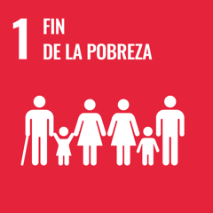
1. Fin de la pobreza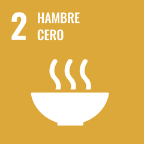
2. Hambre cero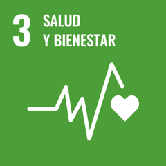
3. Salud y bienestar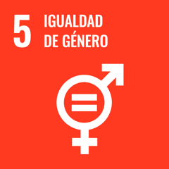
5. Igualdad de género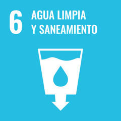
6. Agua limpia y saneamiento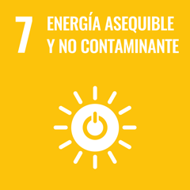
7. Energía asequible y no contaminante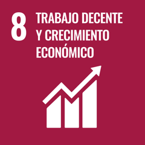
8. Trabajo decente y crecimiento económico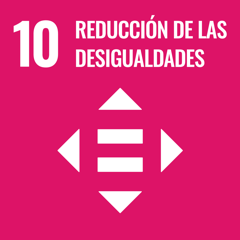
10. Reducción de las desigualdades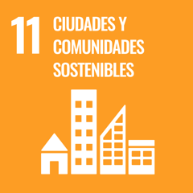
11. Ciudades y comunidades sostenibles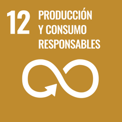
12. Producción y consumo responsables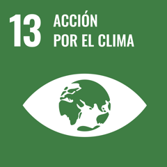
13. Acción por el clima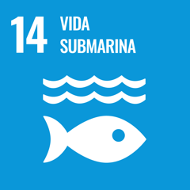
14. Vida submarina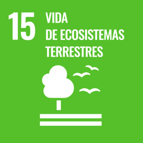
15. Vida de ecosistemas terrestres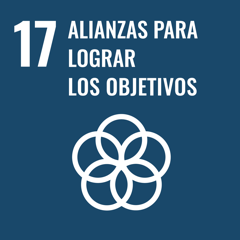
17. Alianzas para lograr los objetivos